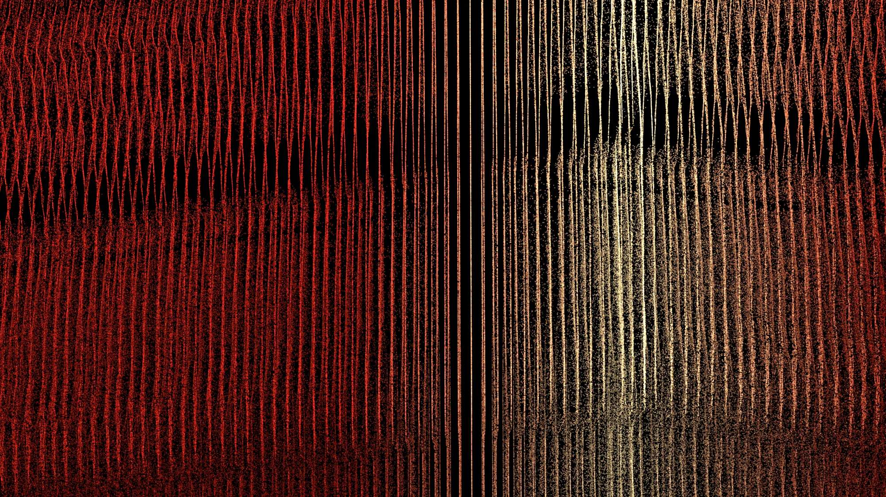
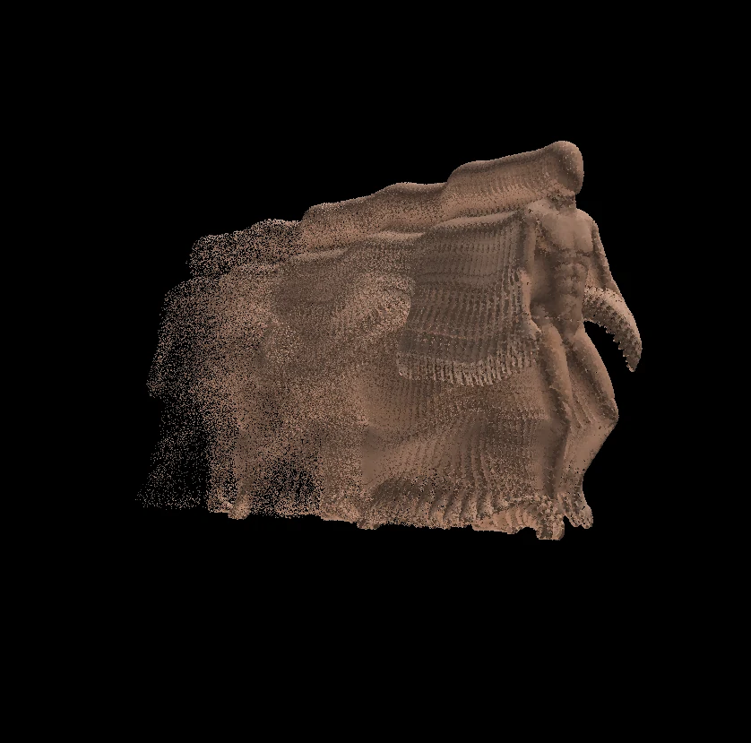
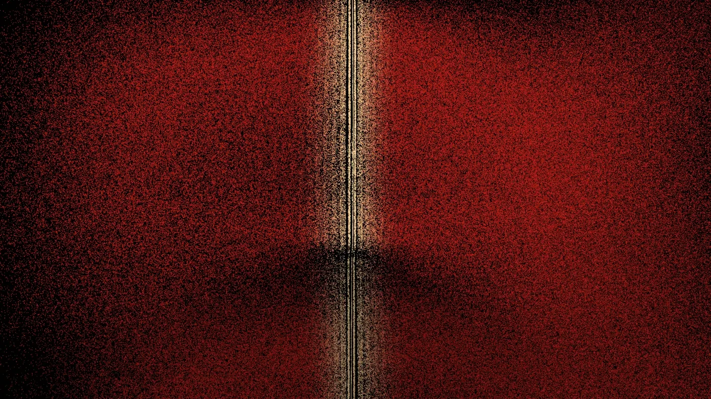
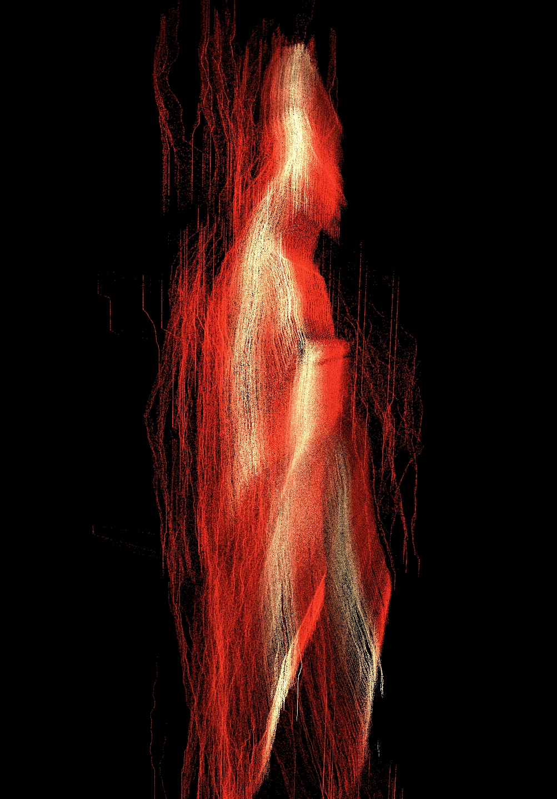
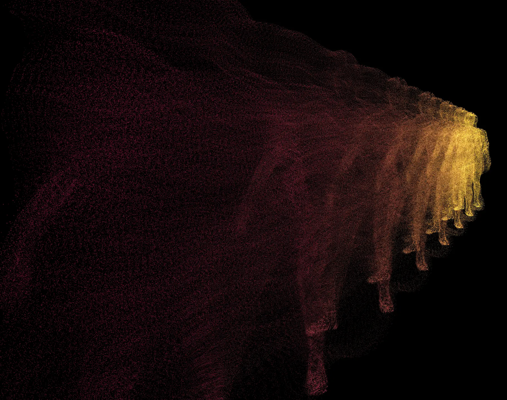
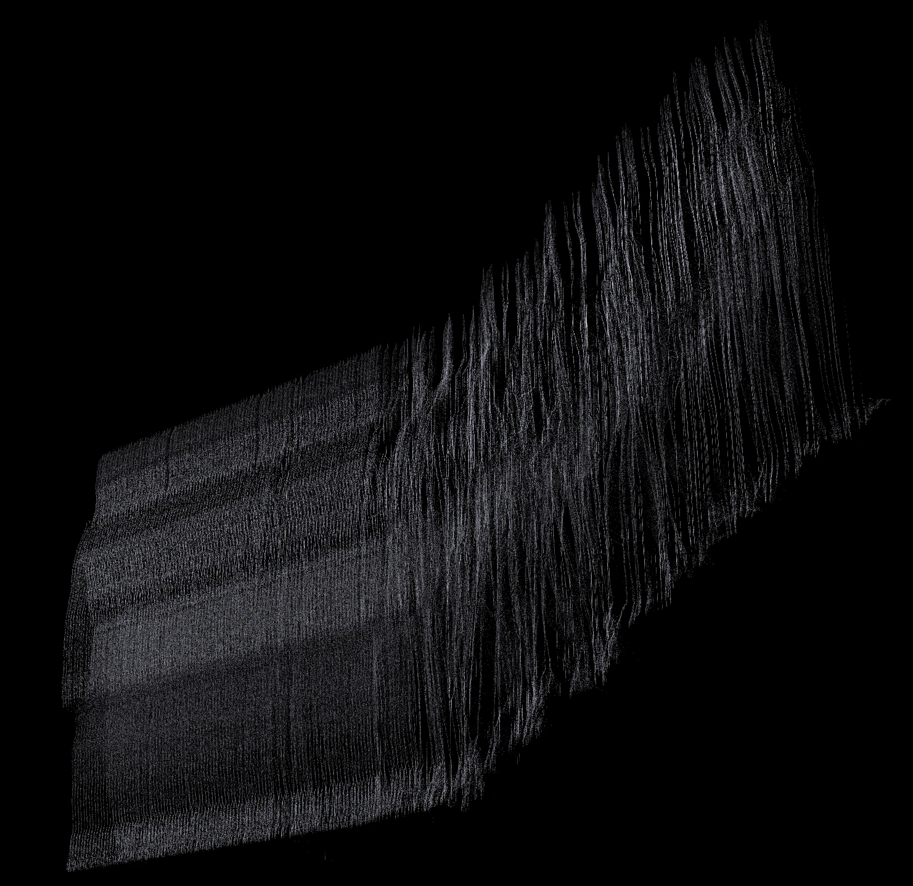
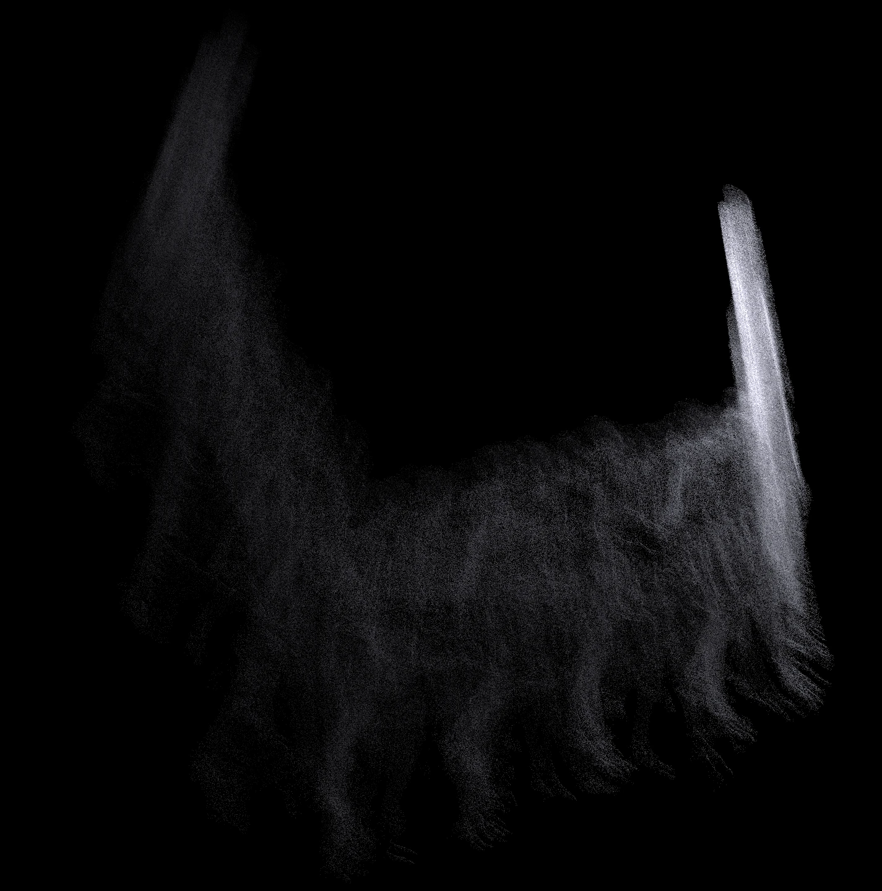
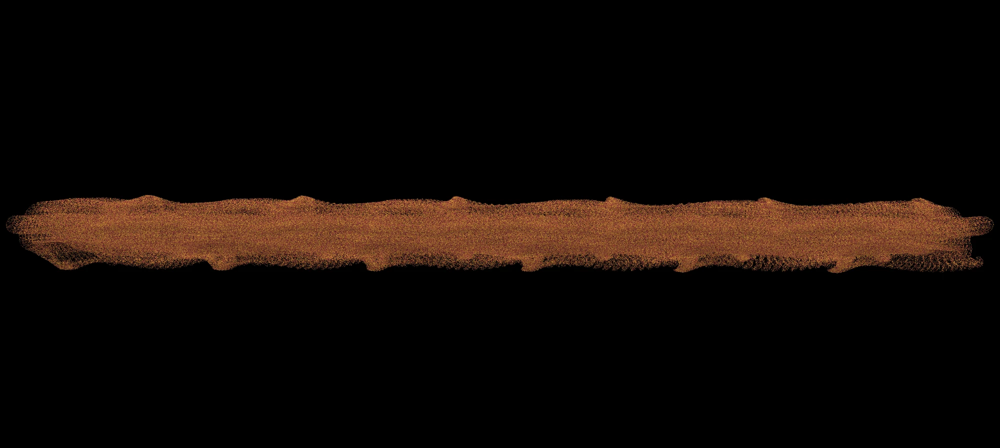

Virtual Fourth Dimension / 2026
V4D
A photograph chooses one moment and throws away the rest. This work keeps the rest.
01 / The block
A walk, kept whole.
A body crosses a space. A camera would hand you a stack of frames, each one already sure of what is over. V4D holds that same walk as a single object instead: millions of points, each with a place, a colour and a moment. Time stops being something that passes. It becomes a material, a block you can walk around.
Look along the block and you see a person. Look across it and the person is gone: there is only the long shape their life drew through the room.


02 / The Temporal Lens
The shutter never closes.
The Lens is how you look at the block. It decides which part of time you keep, how that time is laid into space, what age does to the matter, and how the matter is drawn. Nothing is rendered in advance and nothing is final. The same few seconds can be asked the same question forever and answer differently each time.


03 / Ways of looking
Each preset is an idea about time.
- EXPOSURE The whole walk at once, the way a long exposure remembers a street.
- ECHO The present, trailed by fading copies of what it has just been.
- STROBE Time cut into regular slices, in the line of Marey and Muybridge.
- SCULPT Motion laid into depth until movement stands still as a form.
- SLIT3D One thin plane of space, held open for all of time.
- DISSOLVE A solid now, with its past and future coming apart as dust.
- FIREBRAND Rumi's image: one ember, whirled until it looks like a ring of fire.
I keep coming back to how little the figure matters by the end. The walker is an excuse. What you are looking at is duration, and it turns out duration has weight, grain and a colour.



04 / Your turn
It runs in your browser.
V4D opens on EXPOSURE with the walker. Drag to turn it, change the preset, slow it down, take the colour somewhere else. You can also drop in your own green-screen video in Chrome or Edge and watch yourself become a block of time.
Needs WebGPU: a current Chrome or Edge on a computer, Safari 26+ or Firefox 141+.
Licence: the source will open soon at github.com/MehranMarxian/V4D, with the code under the Apache License 2.0. The name V4D, the icon and the images on this page stay © Mehran Ahmadi, all rights reserved. Images you make yourself with the software are yours.
Credits: the walker is the Ch36 character with its Walking clip from Adobe Mixamo. The method stands on the work of Nils Vilnis, Memo Akten, MoSculp and others.